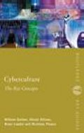

|  |
| About IR |
| Editors |
| Author instructions |
| Copyright |
| Author index |
| Subject index |
| Search |
| Reviews |
| Register |
| Home |
Bell, David J., Loader, Brian, Pleace, Nicholas, and Douglas Schuler. Cyberculture: the key concepts London: Routledge, 2004. xiv, 211 p. ISBN 0-415-24754-3. £12.99
The appearance of a specialised dictionary usually signifies the establishment of a special vocabulary of a recognised area of study. A small pocket book that I picked up can be treated as an evidence of a new area of cultural studies maturing. Several authors (three from USA and one from UK known in the fields of cultural, information and network society, virtual communities' studies) set a goal to summarise the basic terminology used in literature discussing the impact of the digital technology on media and human interaction. The concepts and terms are collected under the title of cyberculture. Though this is a fuzzy term that is used quite liberally, it seems that cyberculture studies begins to acquire some focus. However, the authors did not risk providing any explanation of this particular word "cyberculture". In the introduction they refer to cyberculture as, "a contested and evolving discourse" (p. xiii) and no more. Looking into the list of concepts that are interpreted in the book one can understand the decision. The list includes almost 300 words denominating technological and software items, jargon terms created by users and developers of the Internet, titles of films and generic names of characters, specific terms like feminism or libertarianism with the prefix "cyber-", even some surnames, and more.
The whole dictionary seems to centre on making sense of the new technologies and their uses in various environments. Novels and films speculating on the issues of human and non-human (artificial) intelligence, virtuality and reality, cyberspace, as well as their authors and heroes figure prominently in many chapters. Together with simple explanations of technical and programming terminology this makes the book attractive to a wide audience, not only to scholars and students in humanities and social science.
The book has the form of a dictionary; however, it is not as rigid as dictionaries usually are. The authors claim that they intended to provide interpretations rather than definitions and in most cases they are true to their word. They also provide historical perspective (as much as one can talk of such for very modern and recent phenomena). The concepts are well cross-referenced. There is an impressive, though selective, list of literature at the end. The relevant references to it are made from the majority of chapters (though I would prefer to have short bibliographic descriptions here, instead of references to the list). An index provides one more possibility of navigation through the text.
The book is definitely useful to students in a wide range of studies related to modern information and communication technologies—from very hard and technical to soft and humanitarian. I would suggest that libraries serving LIS departments, especially those offering courses in digital libraries acquire this small book. It might offer a wider horizon and different discourse in which our usual and familiar concepts occur. Of course, this type of publications has a short span of life because of the stormy development of the area they focus upon. On the other hand, the dictionary includes concepts that have remained stable for a longer time and acquired recognition within several areas of studies. These may not change though new ones will most probably appear.
Dr. Elena Macevičiūtė
Vilnius University and Högskolan i Borås
June, 2004
How to cite this review
Macevičiūtė, E. (2004). Review of: Bell, David J., Loader, Brian, Pleace, Nicholas, and Douglas Schuler. Cyberculture: the key concepts London: Routledge, 2004. Information Research, 9(4), review no. R143 [Available at: http://informationr.net/ir/reviews/revs143.html]